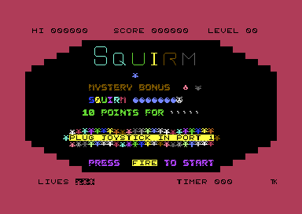
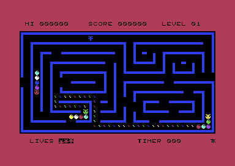
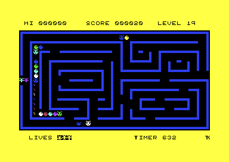
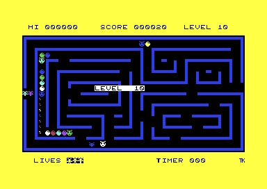
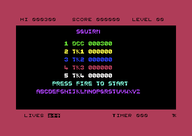
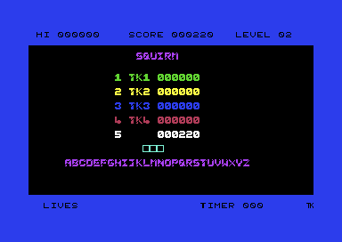

<meta charset="utf-8">
<meta name="viewport" content="width=device-width, initial-scale=1">
<title>Squirm</title>
<link rel="preconnect" href="https://fonts.googleapis.com">
<link rel="stylesheet" href="https://fonts.googleapis.com/css2?family=Lato:wght@400;700;900&family=IBM+Plex+Mono:wght@400;500&display=swap">
<style>
:root{
  --bg:#23262d; --paper:#e9e7e1; --surface:#ffffff; --surface-2:#f1efea; --line:#d5d3cc; --line-soft:#e0ded8;
  --ink:#2f3136; --ink-soft:#55585f; --ink-mute:#80838a;
  --link:#1f5fa8; --link-hover:#154480; --accent:#1f5fa8;
  --amber:#c25a00; --cyan:#1f5fa8; --coral:#d04a3a; --green:#2a8a4a; --violet:#4a5bd6; --hl:#fff0c2;
  --chip:#2f3136; --chip-ink:#ffffff;
  --c64blue:#40318d; --c64grey:#686868;
  --fd:'Lato',system-ui,sans-serif; --fb:'Lato',system-ui,sans-serif; --fm:'IBM Plex Mono',ui-monospace,Menlo,monospace;
  --col:1080px; --gx:68px; --fs:17px; --lh:1.6; --hw:900; --h1:46px; --h2:26px; --sy:48px; --pp:26px; --r:10px;
  --plate-shadow:0 1px 2px rgba(0,0,0,.05),0 4px 14px rgba(0,0,0,.05);
}
*{box-sizing:border-box}
html{background:var(--bg);min-height:100%}
body{background:var(--paper);color:var(--ink);font-family:var(--fb);font-size:var(--fs);line-height:var(--lh);max-width:var(--col);margin:0 auto;min-height:100vh;padding:0 0 4rem}
h1,h2,h3{font-weight:var(--hw);letter-spacing:-.01em;text-wrap:balance;color:var(--ink);margin:0}
.wrap{padding:0 var(--gx)}
.hero{padding:48px var(--gx) 8px;text-align:left}
.eyebrow{font-family:var(--fm);font-size:12px;letter-spacing:.08em;text-transform:uppercase;color:var(--ink-mute);margin:0 0 10px}
.hero h1{font-size:var(--h1);line-height:1.15;letter-spacing:-.02em;margin:0 0 14px}
.hero .sub{margin:0 0 .6em;color:var(--ink-soft)}
section{padding:var(--sy) 0 24px}
section:last-of-type{border-bottom:none}
.fig{font-family:var(--fm);font-size:12px;letter-spacing:.08em;text-transform:uppercase;color:var(--ink-mute);margin:0 0 10px}
h2.t{font-size:var(--h2);margin-bottom:12px}
.lede{color:var(--ink-soft);margin:0 0 30px}
.plate{background:var(--surface);border:1px solid var(--line);border-radius:var(--r);padding:var(--pp);box-shadow:var(--plate-shadow)}
.cap{font-size:14px;color:var(--ink-mute);margin-top:14px;line-height:1.55}
.cap b{color:var(--ink);font-weight:700}
code{font-family:var(--fm);font-size:.82em;background:var(--chip);color:var(--chip-ink);border-radius:4px;padding:2px 6px;overflow-wrap:break-word;-webkit-box-decoration-break:clone;box-decoration-break:clone}

.sq-bar{display:flex;flex-wrap:wrap;gap:8px;margin:0 0 14px;align-items:center}
.sq-btn{font:inherit;font-family:var(--fm);font-size:12.5px;background:var(--surface);border:1px solid var(--line);border-radius:6px;padding:5px 11px;color:var(--ink);cursor:pointer;line-height:1.3}
.sq-btn:hover{border-color:var(--ink-mute)}
.sq-btn[aria-pressed="true"]{background:var(--accent);border-color:var(--accent);color:#fff}
.sq-btn:disabled{opacity:.45;cursor:default}
.sq-lbl{font-family:var(--fm);font-size:12px;color:var(--ink-mute);margin-right:2px}
.sq-pics{display:grid;grid-template-columns:repeat(3,minmax(0,1fr));gap:14px}
.sq-pics.sq-two{grid-template-columns:repeat(2,minmax(0,1fr))}
.sq-pics figure{margin:0}
.sq-pics img{display:block;width:100%;height:auto;image-rendering:pixelated;border-radius:4px}
.sq-pics figcaption{font-size:13px;color:var(--ink-mute);margin-top:6px;line-height:1.45}
.sq-stack{position:relative;width:100%;max-width:768px}
.sq-stack canvas{display:block;width:100%;height:auto;image-rendering:pixelated;border-radius:4px}
.sq-stack canvas+canvas{position:absolute;left:0;top:0;pointer-events:none;image-rendering:auto}
.sq-tbl{border-collapse:collapse;font-size:14px;width:100%;margin:4px 0 0}
.sq-tbl th,.sq-tbl td{text-align:left;vertical-align:top;padding:5px 8px;border-bottom:1px solid var(--line-soft)}
.sq-tbl th{font-weight:700;color:var(--ink-soft)}
.sq-tbl td.sq-n,.sq-tbl th.sq-n{font-family:var(--fm);font-size:13px;white-space:nowrap;text-align:right}
.sq-tbl tr.sq-on td{background:var(--hl)}
.sq-wrapx{overflow-x:auto}
.sq-out{font-family:var(--fm);font-size:13px;color:var(--ink);margin:12px 0 0;line-height:1.55;white-space:pre-wrap}
.sq-log{font-family:var(--fm);font-size:12.5px;line-height:1.5;margin:12px 0 0;padding:10px 12px;background:var(--surface-2);border-radius:6px;min-height:7.5em;white-space:pre-wrap}
.sq-split{display:grid;grid-template-columns:minmax(0,1fr) minmax(0,1fr);gap:20px;align-items:start}
.sq-big{font-family:var(--fm);font-size:28px;letter-spacing:.06em;margin:8px 0 0}
.sq-keys{display:grid;grid-template-columns:repeat(8,minmax(0,1fr));gap:4px;margin:6px 0 0}
.sq-keys button{font-family:var(--fm);font-size:12px;padding:8px 0;border:1px solid var(--line);border-radius:6px;background:var(--surface-2);color:var(--ink);cursor:pointer}
.sq-keys button[aria-pressed="true"]{background:var(--accent);border-color:var(--accent);color:#fff}
.sq-keys span{font-family:var(--fm);font-size:11px;color:var(--ink-mute);text-align:center}
.sq-bits{font-family:var(--fm);font-size:15px;margin:12px 0 0}
@media (max-width:720px){:root{--gx:16px;--h1:34px;--pp:16px}.sq-pics,.sq-pics.sq-two,.sq-split{grid-template-columns:1fr}.sq-keys{grid-template-columns:repeat(4,minmax(0,1fr))}}
</style>
<!-- tabs -->
<header class="hero">
  <p class="eyebrow">1984 · Mastertronic</p>
  <h1>Squirm</h1>
  <p class="sub">A maze game drawn entirely in characters, the letter-sized tiles of the screen, where each cell takes its colour from where it is, so the worms change colour as they crawl. Even a death depends on the machine: its noise falls differently on each of the two sound chips the C64 was made with.</p>
</header>
<main class="wrap">

<section id="game">
  <p class="fig">01 · The game</p>
  <h2 class="t">Collect 255 eggs in a maze full of worms</h2>
  <p class="lede">The player collects eggs in a maze that fills one screen, while five worms crawl the corridors.</p>
  <div class="plate">
    <div class="sq-pics">
      <figure><figcaption>The title: an egg is worth 10, the treasure is a mystery bonus.</figcaption></figure>
      <figure><figcaption>Level 1, a few seconds in. The player is the small figure at the left edge.</figcaption></figure>
      <figure><figcaption>The bonus run: a yellow border, a timer, and a trail of blocks.</figcaption></figure>
    </div>
  </div>
  <p>Squirm was written by Tony Kelly and sold by Mastertronic on cassette in 1984. The player is a small spinning figure in a maze that fills the screen, and five worms crawl the corridors with it. Two of the worms lay an egg in the cell their tail has just left. The other three clear that cell, so they eat any egg they crawl over.</p>
  <p>Each egg the player collects scores 10, and the 255th ends the level. A worm's head or body landing on the player's cell costs one of three lives. After the last egg comes a bonus run of about 15 seconds. In it the worms stand still, and each worm the player eats scores points. From the second level, on three levels out of every four, a treasure walks the maze as well, worth nothing, 10, or 100 points.</p>
  <p>The C64's memory is a row of 65,536 bytes, each holding a number from 0 to 255. Numbers written with a $ are hexadecimal: they count in sixteens, with the digits 0 to 9 and then A to F, so <code>$10</code> is 16 and <code>$FF</code> is 255. Those in dark boxes are addresses in that memory, or the names the listing gives them, and each opens the Source code tab at that point.</p>
</section>

<section id="music">
  <p class="fig">02 · The music</p>
  <h2 class="t">Music: the title tune is one low note's harmonics</h2>
  <p class="lede">Every note of the tune is a whole-number multiple of one low note, about 150 Hz (vibrations a second), so it sounds like a bugle call rather than a melody in a key.</p>
  <div class="plate">
    <div id="sq-music"></div>
    <p class="cap">The player runs the game's own sound code, taken from the listing, on a model of the C64's processor, the 6502. It runs the code once a jiffy, about a sixtieth of a second or 16,422 of the processor's cycles. That is how often the KERNAL, the C64's built-in system code, interrupts the game: a timer makes the processor stop what it is doing, run a short routine, and go back. The code is the set-up of the sound chip in <code>new_game</code> (<code>$3B25</code>), then the title loop (<code>$3BB2</code>), the level jingle (<code>$38B0</code>), or the bonus run (<code>bonus_run</code>, <code>$3780</code>, and <code>bonus_tune_step</code>, <code>$3D5C</code>).</p>
  </div>
  <p>The C64's sound chip, the SID, has three voices, and each plays one note at a time. The game plays every sound on two of them. Both are set to a pulse wave, a buzzy square tone, with the same envelope, the shape of each note's rise and fall in volume (<code>new_game</code>, <code>$3B33</code>). A voice's pitch is a number two bytes long. The game writes only the high byte, the one that counts in steps of 256 (<code>$D401</code> for voice 1 and <code>$D408</code> for voice 2), and never the low byte. So a note can be one of 255 pitches, each about 15 Hz above the one before.</p>
  <p>The title tune is two tables of 100 bytes, one for each voice (<code>title_tune_voice1</code>, <code>$3E80</code>, and <code>title_tune_voice2</code>, <code>$3EE4</code>). Every byte in them is a multiple of 10, from <code>$0A</code> (10) to <code>$64</code> (100). A high byte of 10 is about 150 Hz, 20 about 300 Hz, and 100 about 1,500 Hz. These are the harmonics of 150 Hz, its whole-number multiples, which are the notes a bugle can play. Each harmonic is a smaller step in pitch above the one below it. Each step of the tune lasts 10 jiffies, a sixth of a second. The title plays the 100 steps round and round until fire is pressed.</p>
  <p>The level jingle is the title tune's first 30 steps. The bonus run plays a tune of its own on voice 2 (<code>bonus_tune</code>, <code>$3DB8</code>), one note for each pass of the run. A pass is one time round the game's main loop, in which everything that moves takes one step. The tune is 151 notes long, and on the first four levels the run lasts 151 passes, so the two end together. The routine that plays the tune counts on to 255 notes, though, so a faster run goes past the end of it (<a href="discoveries.html#bonus-tune">Discoveries</a>).</p>
</section>

<section id="sound">
  <p class="fig">03 · The sound effects</p>
  <h2 class="t">Sound: an effect is one pitch, held for one pass</h2>
  <p class="lede">The main loop silences both voices at the end of every pass, so on the first levels each sound lasts a tenth of a second.</p>
  <div class="plate">
    <div id="sq-sfx"></div>
    <p class="cap">The same player, on the game's own code. The eggs are the main loop's write (<code>$3C0F</code>), once a pass of 6 jiffies. The treasure plays its note (<code>$39C6</code>). The death (<code>lose_life</code>, <code>$3A7D</code>) plays once for each model of the sound chip, with the chip's data lines fading as the VICE emulator fades them on that model (below). The new best score is the five beeps of a score climbing the high-score table, each made by <code>fade_beep</code> (<code>$30A2</code>). The first eggs are below 100 Hz, which laptop and phone speakers barely play.</p>
  </div>
  <p>Every pass of the main loop ends by writing 0 to both voices' pitch (<code>$3C5F</code>), so a sound written during a pass lasts until the pass ends: six jiffies on the first four levels. An egg writes the number of eggs collected so far to voice 1's pitch (<code>$3C0F</code>). The first egg sounds at 15 Hz and the 255th at about 3,800 Hz, so the tone climbs through the whole level. The treasure plays notes 2 to 30 of the title tune's first voice on voice 2, one for each step it takes (<code>$39C6</code>).</p>
  <p>The death switches voice 1 to noise and lowers its pitch once for each row the player falls. It does that with an instruction that reads the pitch back from the chip, and the SID cannot be read back. The read gets whatever value is left on the chip's data lines, the wires that carry each byte to it. That value fades at a different speed on the two models of the chip, the 6581 and the 8580 (<a href="discoveries.html#death-sound">Discoveries</a>).</p>
  <p>The name entry's beeps are the one sound that fades: <code>fade_beep</code> (<code>$30A2</code>) steps the volume and voice 1's pulse width, the share of each wave spent high, from 15 down to 0, six jiffies a step.</p>
</section>

<section id="frame">
  <p class="fig">04 · The screen</p>
  <h2 class="t">The play screen, rebuilt from the game's memory</h2>
  <p class="lede">Everything on the screen is a character: the maze, the worms, the eggs, and the player. There are no sprites, the shapes the C64 can move over the screen on their own.</p>
  <div class="plate">
    <div class="sq-bar">
      <button type="button" class="sq-btn" id="sq-anim" aria-pressed="false">Animate the characters</button>
      <button type="button" class="sq-btn" id="sq-cols" aria-pressed="false">Show each cell's colour number</button>
    </div>
    <div class="sq-stack"><canvas id="sq-frame" width="384" height="272" aria-label="The first moment of level 1, drawn from memory by the page"></canvas><canvas id="sq-frame-ov" width="768" height="544" aria-hidden="true"></canvas></div>
    <p class="cap" id="sq-frame-cap">Drawn by the page from the game's own code, run on the model of the 6502: the start-up (<code>start</code>, <code>$3B1D</code>), with fire pressed on the title, up to the first wait of the first pass of play (<code>$3C56</code>). The page cuts the game's waits short, so it then runs the game's interrupt routine (<code>irq_handler</code>, <code>$3CB3</code>) 95 times by itself. That turns the moving characters to a pose they reach in play.</p>
  </div>
  <p>The screen is 40 columns by 25 rows of characters. For each cell the video chip reads one byte, the character's number, from the screen memory at <code>$0400</code>. It draws that character's shape, 8 by 8 pixels, from the game's own character set at <code>$2800</code>.</p>
  <p>The maze screen turns on multicolour mode (<code>$D016</code> = <code>$D8</code>, set at <code>$3BE0</code>), which lets each cell be drawn in one of two ways. Colour RAM, at <code>$D800</code>, holds a number from 0 to 15 for every cell. A number of 8 or more makes its cell multicolour: each pair of bits in the shape is one wide pixel, in one of four colours. They are the black background, two colours shared by every cell (<code>$D022</code> and <code>$D023</code>, both blue), and the cell's own colour, its number less 8. A number below 8 draws the cell the ordinary way, each bit one pixel in that colour.</p>
  <p><code>colour_maze</code> (<code>$35E8</code>) fills colour RAM once, as a level starts. A wall cell gets 9, a multicolour cell whose own colour is white. Every other cell gets a counter that steps from 1 to 7 and round again on every cell, walls included, so the colour of an empty cell depends only on where it is. The game never colours a cell again. A worm, an egg, or the player takes the colour of the cell it is drawn in, so a worm changes colour cell by cell as it crawls. The second button above writes each cell's number over it.</p>
  <p>The movement in the picture comes from the character set itself. On every seventh call of its interrupt routine, about 8.6 times a second, the game rewrites the shapes of a few characters (<code>irq_handler</code>, <code>$3CB3</code>). Each row of the egg rolls one pixel to the left. The two treasures swap between two poses. The eight frames of a spinning figure move round one place (<code>rotate_spinner</code>, <code>$2508</code>). The spinning figure is the player, and the three figures beside LIVES are three of its other frames. Every egg on the screen rolls at once, because every egg is the same character and the game changes its one shape.</p>
</section>

<section id="player">
  <p class="fig">05 · The player</p>
  <h2 class="t">The player keeps going until a wall stops it</h2>
  <p class="lede">The stick chooses a turn, and the player carries on the way it was going until the turn is open or a wall blocks the way.</p>
  <div class="plate">
    <div class="sq-bar" id="sq-p-stick">
      <span class="sq-lbl">Stick:</span>
      <button type="button" class="sq-btn" data-v="255" aria-pressed="true">nothing</button>
      <button type="button" class="sq-btn" data-v="254" aria-pressed="false">up</button>
      <button type="button" class="sq-btn" data-v="253" aria-pressed="false">down</button>
      <button type="button" class="sq-btn" data-v="251" aria-pressed="false">left</button>
      <button type="button" class="sq-btn" data-v="247" aria-pressed="false">right</button>
      <button type="button" class="sq-btn" data-v="239" aria-pressed="false">fire</button>
    </div>
    <div class="sq-bar">
      <button type="button" class="sq-btn" id="sq-p-step">One pass</button>
      <button type="button" class="sq-btn" id="sq-p-ten">Ten passes</button>
      <button type="button" class="sq-btn" id="sq-p-reset">Start again</button>
    </div>
    <div class="sq-stack"><canvas id="sq-p-cv" width="384" height="272" aria-label="The maze as the game's main loop leaves it after each pass"></canvas></div>
    <p class="sq-out" id="sq-p-out"></p>
    <p class="cap">Each pass runs the game's main loop (<code>main_loop</code>, <code>$3BF6</code>) once, on the model of the 6502, with the joystick port reading what the buttons say. The worms move too, as they do on the first level. The page cuts the loop's waits short, so one pass happens at once. Ten passes play at the game's first speed, ten a second.</p>
  </div>
  <p><code>move_player</code> (<code>$306E</code>) reads the joystick port once a pass. A direction on the stick is tried first, and the player turns if that way is open. If it is blocked, the player carries on the way it was already going, and stops when that is blocked too. So a turn can be pushed on the stick early and held, and the player takes it at the first opening. Fire alone stops the player where it stands (<code>$3060</code>).</p>
  <p>Before each step, <code>try_cell</code> (<code>$2FF9</code>) looks at the character in the next cell. The player may enter a space or any character from <code>$28</code> up, which takes in the eggs, the worms, and the treasure. The wall shapes are all below <code>$28</code>. The player's position is kept as an address in screen memory, so a step left is one byte back, and a step up is 40 bytes back, a whole row. A step left from the first column therefore lands in the last column of the row above (<code>$304E</code>). The mazes leave those two cells open, on row 12 at the left and row 11 at the right. So the two sides of the maze join, without a line of code to do it.</p>
</section>

<section id="worms">
  <p class="fig">06 · The worms</p>
  <h2 class="t">How a worm chooses its way</h2>
  <p class="lede">Each worm tries up to four directions in a fixed order, and the order carries on from wherever the last worm to move left it.</p>
  <div class="plate">
    <div class="sq-bar" id="sq-w-stage">
      <span class="sq-lbl">Stage:</span>
      <button type="button" class="sq-btn" data-v="1" aria-pressed="true">1</button>
      <button type="button" class="sq-btn" data-v="2" aria-pressed="false">2</button>
      <button type="button" class="sq-btn" data-v="3" aria-pressed="false">3</button>
      <button type="button" class="sq-btn" data-v="4" aria-pressed="false">4</button>
      <button type="button" class="sq-btn" id="sq-w-step">One pass</button>
      <button type="button" class="sq-btn" id="sq-w-ten">Ten passes</button>
      <button type="button" class="sq-btn" id="sq-w-reset">Start again</button>
    </div>
    <div class="sq-split">
      <div class="sq-stack"><canvas id="sq-w-cv" width="384" height="272" aria-label="The maze after each pass, the worms' heads marked"></canvas><canvas id="sq-w-ov" width="768" height="544" aria-hidden="true"></canvas></div>
      <div class="sq-log" id="sq-w-log" aria-live="polite"></div>
    </div>
    <p class="cap">The game's main loop again, with the player standing still, at the chosen stage of the four that decide which worms move (Progression, below). The list is every test a mover made in the last pass, in order: the direction <code>worm_direction</code> (<code>$2680</code>) gave it and what <code>cell_is_free</code> (<code>$3C93</code>) found in that cell.</p>
  </div>
  <p>Every mover, each worm and the treasure, shares one counter, <code>worm_direction</code> (<code>$2680</code>). The counter steps through right, left, up, and down, then starts again. Before each try a worm turns the counter one step (<code>next_worm_direction</code>, <code>$333D</code>) and tests the cell that way. A free cell takes the head, and the body follows. A blocked one means another turn of the counter, up to four tries. A worm boxed in on all four sides has its head put back on its start cell (<code>$33A4</code>), and its body follows it there one cell a step.</p>
  <p>So the direction a worm tries first depends on how many tries the movers before it made in the same pass. Nothing is random, but the order shifts every pass, and a worm wanders.</p>
  <p>The test that decides a free cell, <code>cell_is_free</code> (<code>$3C93</code>), takes a space, an egg, or the player's own character. A worm catches the player by crawling onto it, which an older version of the test did not allow (<a href="discoveries.html#worm-test">Discoveries</a>).</p>
  <div class="sq-wrapx"><table class="sq-tbl">
    <thead><tr><th>Worm</th><th class="sq-n">Cells</th><th>Starts at row, column</th><th>Leaves behind</th><th>Moves at stages</th></tr></thead>
    <tbody>
      <tr><td>A (<code>step_worm_a</code>)</td><td class="sq-n">8</td><td class="sq-n">3, 22</td><td>an egg</td><td>4</td></tr>
      <tr><td>B (<code>step_worm_b</code>)</td><td class="sq-n">5</td><td class="sq-n">21, 13</td><td>a space</td><td>3 and 4</td></tr>
      <tr><td>C (<code>step_worm_c</code>)</td><td class="sq-n">5</td><td class="sq-n">5, 3</td><td>a space</td><td>1 to 4</td></tr>
      <tr><td>D (<code>step_worm_d</code>)</td><td class="sq-n">5</td><td class="sq-n">9, 13</td><td>a space</td><td>1 to 4</td></tr>
      <tr><td>E (<code>step_worm_e</code>)</td><td class="sq-n">5</td><td class="sq-n">19, 3</td><td>an egg</td><td>1 to 4</td></tr>
    </tbody>
  </table></div>
  <p class="cap">From <code>reset_worms</code> (<code>$3669</code>), the five routines, and <code>move_creatures</code> (<code>$3A46</code>). The cell lists are at <code>$2648</code>-<code>$267F</code>, head first. On the first three stages of each cycle, worm E lays every egg there is.</p>
</section>

<section id="controls">
  <p class="fig">07 · Controls</p>
  <h2 class="t">The game reads one byte from the joystick port, and wants it exact</h2>
  <p class="lede">The stick in control port 1 is read straight from the chip it is wired to, and only five values mean anything.</p>
  <div class="plate">
    <div class="sq-keys" id="sq-keys"></div>
    <p class="sq-bits" id="sq-bits"></p>
    <p class="sq-out" id="sq-keys-out"></p>
    <p class="cap">Press the joystick's lines, or the keys of the keyboard's row 7, which share them. The page runs the game's <code>step_player</code> (<code>$3014</code>) on that value with the player at a crossing of four corridors, row 11, column 30 of maze 1, and says what it did.</p>
  </div>
  <p>Every time the game reads the stick, it loads the byte at <code>$DC01</code>. That is the data port of the CIA, the input and output chip that joystick port 1 is wired to. Each of the byte's eight bits is one line, a wire that reads 0 while it is pressed: up, down, left, right, and fire are bits 0 to 4. <code>step_player</code> (<code>$3014</code>) compares the whole byte with exactly <code>$FE</code> (up), <code>$FD</code> (down), <code>$FB</code> (left), <code>$F7</code> (right) and <code>$EF</code> (fire alone). Any other value, a diagonal or a direction with fire, counts as no new direction, and the player carries on.</p>
  <p>F1 pauses the game. That is the only key the game asks the KERNAL, the C64's built-in system code, about: it reads the number of the last key pressed from <code>$C5</code> at <code>$3C67</code>. The pause silences the sound, waits about two seconds, then waits for fire (<code>pause</code>, <code>$3C73</code>). The same port also reads one row of the keyboard, and five of that row's keys play the game (<a href="discoveries.html#keyboard">Discoveries</a>).</p>
</section>

<section id="levels">
  <p class="fig">08 · Progression</p>
  <h2 class="t">A jiffy faster every four levels</h2>
  <p class="lede">The levels cycle through three mazes and through four stages of what moves. After each cycle of stages, a pass of the main loop waits one jiffy less.</p>
  <div class="plate">
    <div class="sq-wrapx"><table class="sq-tbl" id="sq-lv-tbl"></table></div>
    <p class="cap" id="sq-lv-cap">Worked out by the game's own code on the model of the 6502: <code>level_complete</code> (<code>$3879</code>), then one pass of the main loop, for each level in turn, with the bonus run left out.</p>
  </div>
  <p>Two counters set a level. <code>maze_number</code> (<code>$2682</code>) picks maze 1, 2 or 3 in turn (<code>$390E</code>). <code>level_stage</code> (<code>$2688</code>) runs from 1 to 4 and says what moves (<code>move_creatures</code>, <code>$3A46</code>): worms C, D, and E at stage 1, the treasure as well at 2, worm B as well at 3, and all five worms and the treasure at 4. When the stage reaches 5, <code>move_creatures</code> adds 1 to <code>step_delay</code> (<code>$2689</code>) and starts the stage again at 1 (<code>$3A72</code>).</p>
  <p><code>step_delay</code> is how long each pass waits. The game stores it in <code>$A2</code>, the low byte of the KERNAL's clock, which the interrupt adds 1 to 60 times a second. Then the game waits while that byte is <code>$80</code> (128) or more. <code>$FA</code> (250) takes six jiffies to count past <code>$FF</code> to 0, so the first levels play ten passes a second. Each cycle of four levels takes a jiffy off. From level 25 the main loop does not wait at all. The three mazes are drawn on the <a href="levels.html">Maps</a> tab. The level number shown on the top line goes wrong after 19 (<a href="discoveries.html#level-ten">Discoveries</a>).</p>
</section>

<section id="treasure">
  <p class="fig">09 · The treasure</p>
  <h2 class="t">The mystery bonus is decided by the pass you take it on</h2>
  <p class="lede">The treasure's worth goes round 1, 2, 3 on every pass, ten times a second, and is read at the moment the player reaches it.</p>
  <div class="plate">
    <div class="sq-bar">
      <button type="button" class="sq-btn" id="sq-t-run" aria-pressed="false">Start the passes</button>
      <button type="button" class="sq-btn" id="sq-t-take">Take the treasure</button>
    </div>
    <p class="sq-big" id="sq-t-val"></p>
    <p class="sq-out" id="sq-t-out"></p>
    <p class="cap">A copy, written for this page, of <code>step_treasure</code>'s first lines (<code>$39DF</code>), which step <code>treasure_value</code> (<code>$2684</code>) through 1, 2, and 3 and round again, once a pass. It also copies <code>collect_treasure</code> (<code>$373B</code>), which pays nothing for 1, 10 for 2, and 100 for 3. The passes run at the first level's speed.</p>
  </div>
  <p>From the second stage of each cycle of four levels, a treasure walks the maze as the worms do, from row 21, column 13. It moves with the same shared turning counter and the same test of a free cell (<code>move_treasure</code>, <code>$3961</code>). The title calls it a mystery bonus, and the mystery is a counter. <code>step_treasure</code> steps <code>treasure_value</code> on every pass, and <code>collect_treasure</code> reads it when the player lands on the treasure. The worth shows for 30 passes where the treasure was taken, as one of three characters: 100, 10, or a blank. Two hundred passes after it was taken, the treasure comes back as the other of its two pictures.</p>
</section>

<section id="bonus">
  <p class="fig">10 · The bonus run</p>
  <h2 class="t">In the bonus run, the trail is a wall</h2>
  <p class="lede">After the 255th egg the worms stop, the timer counts 900 down, and every cell the player leaves becomes a block it cannot cross again.</p>
  <div class="plate">
    <div class="sq-pics sq-two">
      <figure><figcaption>The bonus run in the VICE emulator: the blocks are character <code>$00</code>, a wall.</figcaption></figure>
      <figure><figcaption>The next level starts with the jingle and its number spelt out.</figcaption></figure>
    </div>
  </div>
  <p><code>bonus_run</code> (<code>$3780</code>) turns the border and the status lines yellow and spells out BONUS RUN and GET READY in the middle of the maze. Then it points the interrupt at a routine of its own, <code>bonus_irq</code> (<code>$3D27</code>). <code>bonus_irq</code> counts the timer on the bottom line down by one each sixtieth of a second, so the 900 last 15 seconds. It leaves out the normal interrupt's animation, so the eggs stop rolling for the run.</p>
  <p>Only the player moves. A worm's body scores 100, a head 200, and an egg 10. Every cell the player leaves becomes character <code>$00</code>, a solid block, and <code>try_cell</code> (<code>$2FF9</code>) treats every character below <code>$28</code> as a wall.</p>
</section>

<section id="death">
  <p class="fig">11 · Lives</p>
  <h2 class="t">A death drops the player down the screen</h2>
  <p class="lede">The player falls a row at a time to the bottom of the maze, with a falling noise, and the walls flash through every colour.</p>
  <div class="plate">
    <div class="sq-bar"><button type="button" class="sq-btn" id="sq-d-play">Play the death</button></div>
    <div class="sq-stack"><canvas id="sq-d-cv" width="384" height="272" aria-label="The player's fall after a death, drawn by the game's code"></canvas></div>
    <p class="cap">The game's <code>lose_life</code> (<code>$3A7D</code>) run on the model of the 6502 for a player on its start cell, with a picture taken at each of its waits and shown for as many jiffies as the wait lasts.</p>
  </div>
  <p>The main loop looks at the cell the player has just moved to. A worm's head (<code>$43</code>) or body (<code>$44</code>) there costs a life (<code>$3C2C</code>). <code>lose_life</code> (<code>$3A7D</code>) clears the player's cell and draws the figure one row lower every three jiffies, over whatever is in the way, until the row below is the status line. Then the walls' two shared colours count from 0 to 15 together, a jiffy each, and go back to blue, so the walls flash through all 16 of the C64's colours. One of the figures beside LIVES is wiped (<code>$3AFA</code>), and the player starts again on its start cell at row 12, standing still. The worms stay where they were. A game starts with three lives (<code>$3B9D</code>), and the game never gives another.</p>
</section>

<section id="hiscores">
  <p class="fig">12 · High scores</p>
  <h2 class="t">The high-score table is kept inside the screen that shows it</h2>
  <p class="lede">There is no table of scores anywhere in memory. The five rows live in the stored picture of the high-score screen.</p>
  <div class="plate">
    <div class="sq-pics sq-two">
      <figure><figcaption>The table as it loads: the author's initials, TK, five times.</figcaption></figure>
      <figure><figcaption>Name entry: left and right move along the alphabet, fire takes a letter.</figcaption></figure>
    </div>
  </div>
  <p>The score itself exists only on the screen: six digits drawn light on dark at <code>$0414</code>, which <code>add_score</code> (<code>$3724</code>) adds to one digit at a time. The high-score table works the same way. Its five rows are part of the stored high-score screen at <code>hiscore_screen</code> (<code>$1042</code>), which <code>show_hiscore_screen</code> copies to the display. A new score is written into the bottom row on the display. It climbs a row at a time, with a beep each time it passes one (<code>enter_name</code>, <code>$30DE</code>). Then <code>save_hiscores</code> (<code>$30B8</code>) copies the five rows back into the stored screen. The best score also goes into the stored pattern of the top status line (<code>$0FA4</code>), and that is how HI keeps it until the machine is switched off. Writing it there has a side effect (<a href="discoveries.html#new-hi">Discoveries</a>).</p>
</section>

</main>
<footer style="margin:16px 0 0;padding:22px var(--gx) 0;border-top:1px solid #e0ded8;font-family:'IBM Plex Mono',ui-monospace,Menlo,monospace;font-size:12px;color:#80838a"><a href="https://github.com/gamesexplained/gamesexplained" style="color:#1f5fa8;text-decoration:none">GitHub</a> · <a href="https://discord.gg/3V9GWyRDWV" style="color:#1f5fa8;text-decoration:none">Discord</a><br>© Games Explained contributors. Write-ups, facts and symbol maps are available under <a href="https://creativecommons.org/licenses/by-sa/4.0/" style="color:#1f5fa8;text-decoration:none">CC BY-SA 4.0</a>; code under <a href="https://opensource.org/licenses/MIT" style="color:#1f5fa8;text-decoration:none">MIT</a></footer>
<script src="../../lib/c64.js"></script>
<script src="../../lib/sid.js"></script>
<script src="../../lib/cpu6502.js"></script>
<script>
'use strict';
/* sq-machine */
// The widgets' machine: the game's own code from the listing, run on the kit's 6502 (C64Cpu) with
// the chips the code touches answered here. $DC01, the joystick port, reads M.stick ($FF for
// nothing pressed); colour RAM ($D800-$DBFF) and the video chip's registers keep what the code
// writes; the SID and the CIAs' other registers take writes and read 0. Every loop that waits on
// the jiffy clock (the read of $A2 at each address of waits) finds $A2 set to 0 and ends at once,
// so a routine runs to its end at once and the widget keeps its own time. $D011 starts at $1B and
// $D016 at $C8, as the KERNAL leaves them.
//   M.run(pc, until, hooks)   runs from pc until the program counter reaches until
//   M.call(pc, regs, hooks)   calls the routine at pc and returns when it does
//   M.newGame()               start ($3B1D), fire pressed on the title, up to the main loop's
//                             first wait ($3C56): maze 1 drawn and coloured, the worms coiled
//   M.pass(hooks)             one pass of the main loop, main_loop ($3BF6) to its wait ($3C56)
//   M.irq()                   one call of the game's interrupt, irq_handler ($3CB3), up to the
//                             KERNAL's handler ($EA31) that it ends in
//   M.frame()                 the frame C64.renderFrame draws, from memory as it is now
function sqMachine(ram) {
  const waits = [0x30AE, 0x3120, 0x329A, 0x32B4, 0x37A2, 0x37AF, 0x37D6, 0x38C2, 0x38E4, 0x38F1,
    0x3A9E, 0x3AE2, 0x3B03, 0x3BC4, 0x3C5B, 0x3C7C, 0x3D4F, 0x3D82];
  const m = ram.slice(), vic = new Uint8Array(64), colour = new Uint8Array(1024);
  vic[0x11] = 0x1B; vic[0x16] = 0xC8;
  const M = { m, vic, colour, stick: 0xFF };
  const io = {
    read(a) {
      if (a === 0xDC01) return M.stick;
      if (a >= 0xD800 && a < 0xDC00) return colour[a - 0xD800];
      return a >= 0xD000 && a < 0xD040 ? vic[a - 0xD000] : 0;
    },
    write(a, v) {
      if (a >= 0xD800 && a < 0xDC00) colour[a - 0xD800] = v & 15;
      else if (a >= 0xD000 && a < 0xD040) vic[a - 0xD000] = v;
    },
  };
  const cpu = new C64Cpu.CPU(m, { port: 0x35, io });
  const base = {};
  for (const w of waits) base[w] = () => { m[0xA2] = 0; return false; };
  const all = (h) => Object.assign({}, base, h || {});
  M.cpu = cpu;
  M.run = (pc, until, h) => { cpu.pc = pc; cpu.sp = 0xF0; cpu.run({ until, hooks: all(h), maxSteps: 2000000 }); };
  M.call = (pc, regs, h) => cpu.call(pc, Object.assign({ a: 0, x: 0, y: 0 }, regs || {}), { hooks: all(h), maxSteps: 2000000 });
  M.newGame = () => { M.stick = 0xEF; M.run(0x3B1D, 0x3C56); M.stick = 0xFF; };
  M.pass = (h) => M.run(0x3BF6, 0x3C56, h);
  M.irq = () => M.run(0x3CB3, 0xEA31);
  M.frame = () => ({ lines: 312, cycles: 63, vic: Array.from(vic.subarray(0, 47)), cia2: [0x97, 0x3F],
    writes: [], mem: m, colourMem: colour });
  return M;
}
// end of sq-machine

/* sq-sound */
// createDriver for C64Sid: runs the game's own code, from the listing, on the kit's 6502 (C64Cpu,
// which sid.js passes in). The player calls play() once a jiffy, 16,422 cycles, the period of the
// KERNAL's CIA timer that the game keeps (SQ_PERIOD). Every wait in the game stores a value in the
// jiffy clock's low byte $A2 and loops while it is $80 or more; play() adds 1 to $A2, as the
// KERNAL's interrupt does, and runs the game's code until it is waiting again (a read of $A2 at
// one of WAITS that finds it $80 or more), so the game's own waits set the tempo. init(t) first
// runs new_game's set-up of the chip ($3B25-$3B5B: pulse waves, envelopes $88, voice 3 off,
// volume 15), whose writes the first play() hands on, then starts the sound by its kind:
//   title     new_game's title loop ($3BB2), one round of its 100 steps, up to $3BCD, where the
//             game goes round again until fire
//   level     level_complete's jingle and "LEVEL" ($38B0) up to level_pause ($3906)
//   bonus     bonus_run ($3780) up to its change of interrupt ($37E5), then the run itself: one
//             call of bonus_tune_step ($3D5C) a pass, voice 1 silenced each pass ($385A), until
//             901 jiffies have gone ($3D27). A pass is the sound's pass jiffies: 6 unless it says
//             otherwise, step_delay $FA, the first four levels' speed; one jiffy less every four
//             levels (move_creatures, $3A72)
//   treasure  the note part of move_treasure ($39C6) once a pass of 6 jiffies, after the first
//             pass with both voices silenced first, as the main loop does at the end of each
//             pass ($3C5F), for 58 passes
//   eggs      what the main loop does with an egg ($3C04-$3C0F), voice 1's pitch the count, one
//             egg a pass of 6 jiffies from the 1st to the 255th, which level_complete silences at
//             once ($3879)
//   death     lose_life ($3A7D) for a player on its start cell, row 12, falling to the status
//             line, up to $3AC4, where both voices are quiet again. The fall's DEC $D401 reads
//             the SID's data bus (chip: '6581' or '8580'), which this keeps as VICE does: the
//             last value written, until it fades, 7,424 cycles after the write on a 6581 and
//             663,552 on an 8580, each read halving what is left (createBus in sid.js), on a
//             clock of 16,422 cycles a play()
//   climb     the beeps of a new score climbing from fifth place to first ($3179-$3263): voice 1
//             set up as game_over_screen sets it before the name entry ($3273-$3283: pulse width
//             $0A0A, pulse wave with gate), then each pitch written to voice 1 and fade_beep
//             ($30A2) run, which sets the volume itself
const SQ_PERIOD = 16422;
const SQ_MUSIC = [
  { name: 'Title tune', kind: 'title' },
  { name: 'Level jingle and LEVEL', kind: 'level' },
  { name: 'Bonus run', kind: 'bonus' },
];
const SQ_BONUS = [
  { name: 'Bonus run, levels 1 to 4', kind: 'bonus', pass: 6 },
  { name: 'Bonus run, levels 9 to 12', kind: 'bonus', pass: 4 },
];
const SQ_EFFECTS = [
  { name: 'Eggs, 1 to 255', kind: 'eggs' },
  { name: 'The treasure walking', kind: 'treasure' },
  { name: 'Death on a 6581', kind: 'death', chip: '6581' },
  { name: 'Death on an 8580', kind: 'death', chip: '8580' },
  { name: 'A new best score', kind: 'climb' },
];
function createDriver(D, C64Cpu) {
  const WAITS = [0x30AE, 0x3120, 0x329A, 0x32B4, 0x37A2, 0x37AF, 0x37D6, 0x38C2, 0x38E4, 0x38F1,
    0x3A9E, 0x3AE2, 0x3B03, 0x3BC4, 0x3C5B, 0x3C7C, 0x3D4F, 0x3D82];
  const base = new Uint8Array(0x10000);
  base.set(D.bytes, D.at);
  const sid = new Uint8Array(25), vic = new Uint8Array(64);
  const HOLD = { '6581': 0x1D00, '8580': 0xA2000 };
  let m, cpu, s, writes = [], keep = false, phase = 0, n = 0, wait = 0, live = false;
  let jiffy = 0, c0 = 0, bus = 0, ttl = 0, busAt = 0, hold = HOLD['8580'];
  const now = () => jiffy * D.period + (cpu.cycles - c0);
  function age(t) {
    const d = t - busAt;
    busAt = t;
    if (ttl !== 0) { ttl -= d; if (ttl <= 0) { bus = 0; ttl = 0; } }
  }
  const io = {
    read(ad) {
      if (ad === 0xDC01) return 0xFF;
      if (ad >= 0xD000 && ad < 0xD040) return vic[ad - 0xD000];
      if (ad >= 0xD400 && ad < 0xD419) { age(now()); ttl = Math.trunc(ttl / 2); return bus; }
      return 0;
    },
    write(ad, val) {
      if (ad >= 0xD400 && ad < 0xD419) {
        sid[ad - 0xD400] = val; writes.push(ad - 0xD400, val);
        age(now()); bus = val; ttl = hold;
      } else if (ad >= 0xD000 && ad < 0xD040) vic[ad - 0xD000] = val;
    },
  };
  const END = 0xFFFF;
  const hooks = {};
  for (const w of WAITS) hooks[w] = (c) => (c.m[0xA2] & 0x80) !== 0;
  function enter(pc) { m[0x1FF] = END >> 8; m[0x1FE] = (END - 1) & 0xFF; cpu.sp = 0xFD; cpu.pc = pc; }
  function run(until) {
    const h = Object.assign({}, hooks);
    if (until !== undefined) h[until] = () => true;
    cpu.run({ until: END, hooks: h, maxSteps: 500000 });
    return cpu.pc;
  }
  const call = (at) => cpu.call(at, { a: 0, x: 0, y: 0 }, { maxSteps: 100000 });
  const poke = (r, v) => io.write(0xD400 + r, v);
  const UNTIL = { title: 0x3BCD, level: 0x3906, bonus: 0x37E5, death: 0x3AC4 };
  return {
    sid,
    get writes() { return writes; },
    init(t) {
      s = D.sounds[t];
      m = base.slice(); cpu = new C64Cpu.CPU(m, { port: 0x35, io });
      sid.fill(0); vic.fill(0); writes = []; keep = true;
      phase = 0; n = 0; wait = 0; live = true;
      jiffy = 0; c0 = cpu.cycles; bus = 0; ttl = 0; busAt = 0; hold = HOLD[s.chip || '8580'];
      enter(0x3B25); run(0x3B5C);                        // new_game: the chip's set-up
      m[0xFB] = 0xE0; m[0xFC] = 0x05;                    // the player on its start cell, row 12
      m.fill(0xA0, 0x0798, 0x07E8);                      // the status lines, where a fall ends
      m[0xA2] = 0;
      const at = { title: 0x3BB2, level: 0x38B0, bonus: 0x3780, death: 0x3A7D }[s.kind];
      if (at) enter(at);
      if (s.kind === 'treasure') m[0x268F] = 0;
      if (s.kind === 'climb') { poke(3, 0x0A); poke(2, 0x0A); poke(4, 0x41); }
    },
    stop() { writes = []; live = false; poke(1, 0); poke(8, 0); },
    play() {
      if (!keep) writes = [];
      keep = false;
      if (!live) return;
      jiffy++; c0 = cpu.cycles;
      m[0xA2] = (m[0xA2] + 1) & 0xFF;                    // the KERNAL's interrupt: one jiffy
      const k = s.kind;
      if (UNTIL[k] && !(k === 'bonus' && phase)) {
        const at = run(UNTIL[k]);
        if (at !== UNTIL[k]) return;
        if (k !== 'bonus') { live = false; return; }
        phase = 1; n = 0; wait = 0;                      // the run starts at once, in this jiffy
      } else if (k === 'bonus') n++;
      if (k === 'bonus') {                               // the run: 901 jiffies of bonus_irq
        if (n >= 901) { poke(1, 0); poke(8, 0); live = false; return; }   // $3865
        if (wait-- > 0) return;
        if (n) poke(1, 0);                               // voice 1 quiet before the next pass ($385A)
        call(0x3D5C); wait = (s.pass || 6) - 1;          // bonus_tune_step
        return;
      }
      if (k === 'climb') {
        const P = [0x0A, 0x14, 0x1E, 0x28, 0x50];        // $3179, $31AD, $31E1, $3215, $325B
        for (;;) {
          if (phase >= P.length) { live = false; return; }
          if (n === 0) { poke(1, P[phase]); enter(0x30A2); n = 1; }
          if (run() !== END) return;                     // fade_beep waits for the next jiffy
          phase++; n = 0;
        }
      }
      if (wait-- > 0) return;                            // a pass of the main loop: 6 jiffies
      wait = 5;
      if (n) { poke(8, 0); poke(1, 0); }                 // the end of the last pass ($3C5F)
      if (k === 'treasure') { if (n++ >= 58) { live = false; return; } call(0x39C6); }
      else if (k === 'eggs') {
        m[0x2690] = ++n; poke(1, n);                     // $3C04-$3C0F
        if (n === 255) { poke(1, 0); poke(8, 0); live = false; }   // level_complete ($387B)
      }
    },
    playing() { return live; },
  };
}
// end of sq-sound

const $ = (id) => document.getElementById(id);
const hex = (n, w = 4) => '$' + n.toString(16).toUpperCase().padStart(w, '0');
function missing(el, what) {
  const p = document.createElement('p');
  p.className = 'cap';
  p.textContent = 'This widget needs ' + what + ', which the built site serves: it does not run from the file alone.';
  el.appendChild(p);
}
// where a cell of the 40 by 25 screen is on the frame's canvas (VICE's visible area), and on an
// overlay drawn at twice the size
const CX = (c) => 2 * (32 + 8 * c), CY = (r) => 2 * (35 + 8 * r);
const DIRS = { 0xFE: 'up', 0xFD: 'down', 0xFB: 'left', 0xF7: 'right', 0xEF: 'standing still' };
const digits = (m, a, n) => Array.from(m.subarray(a, a + n), (c) => String.fromCharCode(48 + (c & 15))).join('');
function press(bar, btn) { for (const b of bar.querySelectorAll('button[data-v]')) b.setAttribute('aria-pressed', b === btn ? 'true' : 'false'); }

// 04: the rebuilt frame, its animation and the colour numbers
function frameWidget(ram) {
  const M = sqMachine(ram);
  M.newGame();
  for (let i = 0; i < 95; i++) M.irq();
  const cv = $('sq-frame'), ov = $('sq-frame-ov');
  let timer = null, numbers = false;
  function overlay() {
    const g = ov.getContext('2d');
    g.clearRect(0, 0, ov.width, ov.height);
    if (!numbers) return;
    g.font = '600 13px "IBM Plex Mono", monospace';
    g.textAlign = 'center'; g.textBaseline = 'middle';
    for (let r = 2; r <= 22; r++) for (let c = 0; c < 40; c++) {
      const k = M.colour[r * 40 + c];
      if (k & 8) continue;
      g.fillStyle = 'rgba(0,0,0,.6)'; g.fillRect(CX(c) + 1, CY(r) + 1, 14, 14);
      g.fillStyle = '#fff'; g.fillText(String(k), CX(c) + 8, CY(r) + 9);
    }
  }
  function draw() { C64.drawFrame(cv, M.frame(), 1); overlay(); }
  $('sq-anim').addEventListener('click', (e) => {
    const on = e.currentTarget.getAttribute('aria-pressed') !== 'true';
    e.currentTarget.setAttribute('aria-pressed', on ? 'true' : 'false');
    if (timer) { clearInterval(timer); timer = null; }
    // seven interrupts at a time: the characters change on every seventh, 60 / 7 times a second
    if (on) timer = setInterval(() => { for (let i = 0; i < 7; i++) M.irq(); draw(); }, 7000 / 60);
  });
  $('sq-cols').addEventListener('click', (e) => {
    numbers = e.currentTarget.getAttribute('aria-pressed') !== 'true';
    e.currentTarget.setAttribute('aria-pressed', numbers ? 'true' : 'false');
    overlay();
  });
  draw();
}

// the movers' tries in a pass: cell_is_free ($3C93) is reached by a JMP from try_worm_step, so the
// return address on the stack is the mover's own
const MOVERS = [[0x334D, 'A'], [0x33D2, 'B'], [0x3457, 'C'], [0x34DC, 'D'], [0x3561, 'E'], [0x35E8, '?'],
  [0x3961, 'treasure'], [0x39DF, '?']];
function mover(ret) {
  let who = '?';
  for (const [a, n] of MOVERS) if (ret >= a) who = n;
  return who;
}
const TRY = ['', 'right', 'left', 'up', 'down'];
function what(ch) {
  if (ch === 0x20) return 'a space: free';
  if (ch === 0x46) return 'an egg: free';
  if (ch === 0x51) return 'the player: free';
  if (ch === 0x43 || ch === 0x44) return 'a worm: blocked';
  if (ch >= 0x47 && ch <= 0x4D) return 'the treasure: blocked';
  return 'a wall: blocked';
}

// 05 and 06: the main loop, a pass at a time
function stepper(ram, o) {
  let M, log = null, busy = null;
  const cv = $(o.cv);
  function fresh() { M = sqMachine(ram); M.newGame(); for (let i = 0; i < 95; i++) M.irq(); }
  function heads() {
    if (!o.ov) return;
    const ov = $(o.ov), g = ov.getContext('2d');
    g.clearRect(0, 0, ov.width, ov.height);
    g.font = '700 15px "IBM Plex Mono", monospace'; g.textAlign = 'center'; g.textBaseline = 'middle';
    for (const [n, a] of [['A', 0x2648], ['B', 0x2658], ['C', 0x2662], ['D', 0x266C], ['E', 0x2676]]) {
      const at = (M.m[a] | M.m[a + 1] << 8) - 0x400, r = Math.floor(at / 40), c = at % 40;
      g.fillStyle = 'rgba(255,255,255,.9)'; g.fillRect(CX(c) - 2, CY(r) - 18, 20, 18);
      g.fillStyle = '#000'; g.fillText(n, CX(c) + 8, CY(r) - 8);
    }
  }
  function show(note) {
    C64.drawFrame(cv, M.frame(), 1);
    heads();
    if (o.out) {
      const p = M.m[0xFB] | M.m[0xFC] << 8, at = p - 0x400;
      $(o.out).textContent = `Player: row ${Math.floor(at / 40)}, column ${at % 40}, ${DIRS[M.m[0x57]] || 'moving ' + hex(M.m[0x57], 2)}` +
        `\nEggs ${M.m[0x2690]}, score ${digits(M.m, 0x0414, 6)}, lives ${M.m[0x2685]}` + (note ? '\n' + note : '');
    }
    if (o.log) $(o.log).textContent = !log ? 'Press One pass to move the worms.' : log.length ? log.join('\n') : 'Nothing moved this pass.';
  }
  function pass() {
    log = [];
    const lives = M.m[0x2685];
    const hooks = {
      0x3C93: (c) => {
        const ret = (c.m[0x101 + c.sp] | c.m[0x102 + c.sp] << 8) + 1;
        const at = c.m[0x2686] | c.m[0x2687] << 8;
        log.push(`${mover(ret).padEnd(8)} ${TRY[c.m[0x2680]].padEnd(5)} ${what(c.m[at])}`);
        return false;
      },
    };
    if (o.before) o.before(M);
    try { M.pass(hooks); }
    catch (e) { fresh(); show('The last life is gone: the game has moved to its end screen, so the widget starts again.'); return false; }
    show(M.m[0x2685] < lives ? 'Caught: a life is lost and the player is back on its start cell.' : '');
    return true;
  }
  function stop() { if (busy) { clearInterval(busy); busy = null; } }
  $(o.step).addEventListener('click', () => { stop(); pass(); });
  $(o.ten).addEventListener('click', () => {
    stop();
    let n = 0;
    busy = setInterval(() => { if (!pass() || ++n >= 10) stop(); }, 100);
  });
  $(o.reset).addEventListener('click', () => { stop(); log = null; fresh(); show(''); });
  if (o.bar) $(o.bar).addEventListener('click', (e) => {
    const b = e.target.closest('button[data-v]');
    if (!b) return;
    press($(o.bar), b);
    if (o.onPick) o.onPick(+b.dataset.v, M);
  });
  fresh(); show('');
  return { get M() { return M; } };
}

// 07: the joystick port's lines and what step_player makes of them
function keysWidget(ram) {
  const LINES = [['up', '1'], ['down', '←'], ['left', 'CTRL'], ['right', '2'], ['fire', 'SPACE'], ['', 'C='], ['', 'Q'], ['', 'RUN/STOP']];
  const box = $('sq-keys');
  let v = 0xFF;
  const btns = LINES.map(([j, k], bit) => {
    const b = document.createElement('button');
    b.type = 'button'; b.setAttribute('aria-pressed', 'false');
    b.textContent = k;
    b.title = j ? `the key ${k}, or the stick ${j}` : `the key ${k}`;
    b.addEventListener('click', () => { v ^= 1 << bit; run(); });
    return b;
  });
  for (const b of btns) box.appendChild(b);
  for (const [j] of LINES) { const s = document.createElement('span'); s.textContent = j ? 'stick ' + j : '–'; box.appendChild(s); }
  function run() {
    btns.forEach((b, bit) => b.setAttribute('aria-pressed', v & (1 << bit) ? 'false' : 'true'));
    $('sq-bits').textContent = `$DC01 = %${v.toString(2).padStart(8, '0')} = ${hex(v, 2)}`;
    const M = sqMachine(ram);
    M.newGame();
    const at = 0x05D6;                                   // row 11, column 30 of maze 1: open four ways
    M.m[0xFB] = M.m[0xFD] = at & 0xFF; M.m[0xFC] = M.m[0xFE] = at >> 8;
    M.m[0x57] = 0xF7; M.m[0x58] = v;
    M.call(0x3014);
    const now = M.m[0xFB] | M.m[0xFC] << 8, d = now - at;
    const way = { '-40': 'up', 40: 'down', '-1': 'left', 1: 'right' }[d];
    $('sq-keys-out').textContent = way ? `step_player moved the player ${way}.`
      : v === 0xEF ? 'step_player stopped the player where it stands.'
        : `step_player returned A = ${M.cpu.a}: not a direction it knows, so move_player carries on the way the player was already going.`;
  }
  run();
}

// 08: the levels, as the game's code takes them
function levelsWidget(ram) {
  const M = sqMachine(ram);
  M.newGame();
  const MOVES = ['', 'worms C, D, E', 'worms C, D, E and the treasure', 'worms B to E and the treasure', 'all five worms and the treasure'];
  const rows = [];
  const skip = { 0x3780: (c) => { c.rts(); return false; } };   // bonus_run, left out
  for (let n = 1; n <= 30; n++) {
    try { M.pass(); } catch (e) { break; }
    const d = M.m[0x2689], j = d >= 0x80 ? 256 - d : 0;
    rows.push([n, digits(M.m, 0x0423, 2), M.m[0x2682], M.m[0x2688], MOVES[M.m[0x2688]] || '?', hex(d, 2), j ? String(j) : 'none', j ? String(+(60 / j).toFixed(1)) : 'as many as the processor can']);
    M.call(0x3879, {}, skip);
    M.m[0x2690] = 0;
  }
  const t = $('sq-lv-tbl');
  t.innerHTML = '<thead><tr><th class="sq-n">Level</th><th class="sq-n">Shown as</th><th class="sq-n">Maze</th><th class="sq-n">Stage</th><th>What moves</th><th class="sq-n">step_delay</th><th class="sq-n">Jiffies a pass</th><th class="sq-n">Passes a second</th></tr></thead>';
  const b = document.createElement('tbody');
  for (const r of rows) {
    const tr = document.createElement('tr');
    if (r[0] !== +r[1]) tr.className = 'sq-on';
    r.forEach((x, i) => { const td = document.createElement('td'); if (i !== 4) td.className = 'sq-n'; td.textContent = x; tr.appendChild(td); });
    b.appendChild(tr);
  }
  t.appendChild(b);
}

// 09: the treasure's worth, a port of step_treasure's count and collect_treasure's pay
function treasureWidget() {
  const PAY = ['', 'nothing', '10 points', '100 points'];
  let value = 1, timer = null;
  const tally = { 1: 0, 2: 0, 3: 0 };
  const show = () => { $('sq-t-val').textContent = 'treasure_value = ' + value; };
  $('sq-t-run').addEventListener('click', (e) => {
    const on = !timer;
    e.currentTarget.setAttribute('aria-pressed', on ? 'true' : 'false');
    if (timer) { clearInterval(timer); timer = null; }
    else timer = setInterval(() => { value = value === 3 ? 1 : value + 1; show(); }, 100);
  });
  $('sq-t-take').addEventListener('click', () => {
    tally[value]++;
    const n = tally[1] + tally[2] + tally[3];
    $('sq-t-out').textContent = `Taken at ${value}: ${PAY[value]}.\nIn ${n} taken: nothing ${tally[1]}, 10 points ${tally[2]}, 100 points ${tally[3]}.`;
  });
  show();
}

// 11: the death, a picture at each of lose_life's waits
function deathWidget(ram) {
  const cv = $('sq-d-cv');
  let shots = [], timer = null;
  function build() {
    const M = sqMachine(ram);
    M.newGame();
    for (let i = 0; i < 95; i++) M.irq();
    shots = [{ F: snap(M), j: 30 }];
    M.m[0x2685]--;                                     // the main loop takes the life first ($3C34)
    const take = (j) => (c) => { shots.push({ F: snap(M), j }); c.m[0xA2] = 0; return false; };
    M.call(0x3A7D, {}, { 0x3A9E: take(3), 0x3AE2: take(1), 0x3B03: take(60) });
  }
  function snap(M) { const F = M.frame(); F.mem = M.m.slice(); F.colourMem = M.colour.slice(); return F; }
  function play() {
    if (timer) clearTimeout(timer);
    let i = 0;
    const next = () => { C64.drawFrame(cv, shots[i].F, 1); const j = shots[i].j; if (++i < shots.length) timer = setTimeout(next, j * 1000 / 60); else timer = null; };
    next();
  }
  build();
  C64.drawFrame(cv, shots[0].F, 1);
  $('sq-d-play').addEventListener('click', play);
}

function soundWidgets(ram) {
  const bytes = ram.slice(0x0800, 0x3F48);
  for (const [id, list] of [['sq-music', SQ_MUSIC], ['sq-sfx', SQ_EFFECTS]])
    C64Sid.mount($(id), { driver: createDriver, data: { bytes, at: 0x0800, sounds: list, period: SQ_PERIOD }, tunes: list.map((s) => s.name), period: SQ_PERIOD });
}

treasureWidget();
const SQ_NEED = ['sq-frame-cap', 'sq-p-out', 'sq-w-log', 'sq-keys-out', 'sq-lv-cap', 'sq-d-cv', 'sq-music', 'sq-sfx'];
if (typeof C64 === 'undefined' || typeof C64Cpu === 'undefined') {
  for (const id of SQ_NEED) missing($(id).parentNode, "the site's C64 library and 6502");
} else {
  C64.load('listing.json').then((L) => {
    frameWidget(L.ram);
    let stick = 0xFF, stage = 1;
    stepper(L.ram, { cv: 'sq-p-cv', out: 'sq-p-out', step: 'sq-p-step', ten: 'sq-p-ten', reset: 'sq-p-reset', bar: 'sq-p-stick',
      before: (M) => { M.stick = stick; }, onPick: (v) => { stick = v; } });
    stepper(L.ram, { cv: 'sq-w-cv', ov: 'sq-w-ov', log: 'sq-w-log', step: 'sq-w-step', ten: 'sq-w-ten', reset: 'sq-w-reset', bar: 'sq-w-stage',
      before: (M) => { M.m[0x2688] = stage; }, onPick: (v) => { stage = v; } });
    keysWidget(L.ram);
    levelsWidget(L.ram);
    deathWidget(L.ram);
    if (typeof C64Sid === 'undefined') { missing($('sq-music'), "the site's sound chip"); missing($('sq-sfx'), "the site's sound chip"); }
    else soundWidgets(L.ram);
  });
}
</script>
